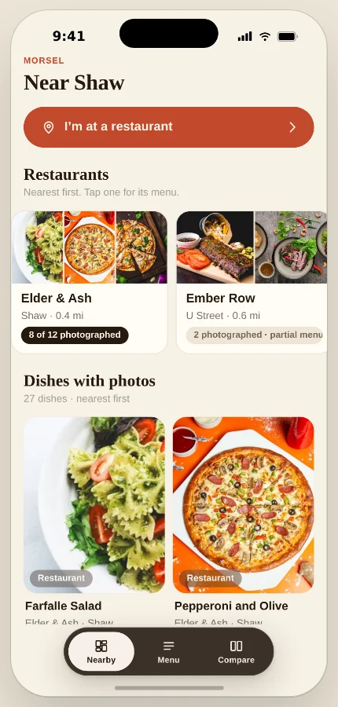

A restaurant’s menu with a photo beside each dish, for the moment you’re at the table deciding what to order.
A design exploration. The direction comes from my own experience at restaurant tables; the decisions below come from design work and prototype review, and none of it has been tested with participants yet.
Try it: tap “I’m at a restaurant”, pick Elder & Ash, find a main for under $25, look at its photos, then compare it with one more.

Interactive concept with fictional restaurants and sample menu data. All photos, including those labeled as diner photos, are illustrative fixtures; nothing is ordered. You can also open the prototype in its own window using the link above.
Sitting at a restaurant with the menu in my hands, I want to see the dishes. A name and a line of description only go so far, so I end up searching the restaurant and scrolling strangers’ photos, hoping one is the dish I’m reading about.
Morsel began in December 2025 as a way to browse photos of dishes near you. It was pleasant to use and it missed the moment: the photos I wanted were for the menu in front of me, not for a dish two neighborhoods away. So I redirected the concept around the table. The hypothesis is that a menu shown in its own order, with a photo beside each dish where one exists, lets people choose with fewer surprises. That is a hypothesis, not a finding.
I designed the flows, the screens, the sample menus and the copy, and built the prototype so each decision could be checked against something that works rather than a mockup.
Two moments meet in the app. Deciding where to go is served by Nearby: restaurant cards and photos of dishes around you, nearest first. Deciding what to order is served by the menu. Nearby exists to lead into a menu, and “I’m at a restaurant” stays one tap from the top, so the at-the-table task is never buried under browsing.
The picker shows restaurants as photo cards with a coverage count and asks for no location. One restaurant, Elder & Ash, is modeled in full: twelve dishes, photos for eight. Nine others carry only their photographed dishes and say so, which is how most restaurants would look early on.
The menu keeps the restaurant’s sections and order. A dish without a photo keeps its place, with a block the same size as a photo that reads “No photo yet” beside its description and price, and it can be opened and compared like any other. A coverage line at the top says how much of the menu has photos.
Sorting photographed dishes first would make a prettier screen and a misleading menu, so that view exists only as a secondary Photos grid, which states how many dishes it leaves out. The tradeoff is an uneven page: the placeholder blocks break the rhythm of the photos. I chose that over a menu that quietly hides a third of itself.
A restaurant’s own photo and a diner’s photo of the same dish tell you different things, so every photo carries its source: “Restaurant photo” or “Diner photo”. A dish with several photos shows them one at a time with a counter. A dish with none says so rather than borrowing a generic image.
The labels add words to every photo, and the two kinds can disagree about how a dish looks. I kept both visible because a diner’s photo is a different kind of evidence from a styled shot, and I kept the labels because a word is cheaper than a guess. In this prototype both are sample fixtures: nobody has contributed anything, and the labels show the provenance the product would carry.
Below the photos, the page states what a photo doesn’t confirm: appearance can vary between visits, and the ingredients line repeats only what the menu lists, naming the four categories it covers.
At a table the decision is now, between a few dishes. Any row or dish page adds a dish to a shortlist of up to three, and the Compare tab keeps count. The compare screen puts the shortlist side by side with price, description, listed ingredients and whatever photo exists, with one button back to the menu. Ordering happens with your server.
Three columns fit a phone at the default text size; at larger sizes they reflow to two and then one, which I prefer to three unreadable ones. A cart would have been familiar, but Morsel doesn’t place orders, and a cart nudges toward adding rather than choosing between.
Every card, row, toggle, tab and photo control is a real button with a visible focus ring. Back returns focus to the row or card that opened the dish, at the same scroll position. The tab bar carries labels and sits on a surface dark enough to read. Text scales to 140% and the layouts reflow rather than clip. A screen-reader pass, contrast measurement over photos and touch checks on a device are still to do.
The prototype covers one full menu because that is the honest size of the idea so far. Being useful depends on coverage, and I would start small: a pilot with a handful of restaurants that agree to a complete menu, each photo matched to a specific dish rather than to the restaurant, and coverage shown as counts the way the cards do now. Menus change and dishes run out; keeping a photo menu current is an operating dependency I haven’t resolved. The app can say when a menu was last checked, but it can’t promise tonight’s availability. None of this exists yet. It is the next set of questions, not a plan with partners.
First, whether the frustration is shared: five or six conversations about the last time someone sat with a menu unsure what to order, and whether they looked for photos. Then the prototype on a table beside a printed menu, watching people pick a main within a budget, decide between two, and say what a dish with no photo is and where a photo came from. Last, a short round on trust: which source people want first, and whether a photo is read as proof of portion or ingredients. The sessions and the decision rules for each are in the validation plan.
I started by building the browsing I enjoyed. It took a review to admit the frustration was at the table, with a menu, and to put a photo, or an honest gap, beside every dish on it. Whether that helps anyone order is the next thing to find out.
Notes from the design and prototype review, for anyone who wants more detail.